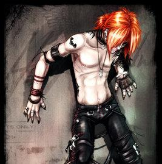

Forums galactiques > Assemblée Galactique : diplomatie officielle > [RP]Qui suis-je ?
Pages : 1
| Aruzan Respect diplomatique : 36  23/06 ETU 22:57 | Score : -1 Détails Un jour ou la paix existée encore un jeune homme, dont le nom à été oublié, fut assasiné pour avoir vu le meurtre d'une femme.Mais sept longue année plus tard il revint avec pour seule but se vengé de la personne qui l'à tué .La seule chos dont se souvint était cette phrase :
"Réveille toi Aruzan et venge toi de Malébolgia !" Il ne sut jamais pourquoi ni comment mais il présentit que Malébolgia était son meurtrier ! Pourquoi l'avait on rammener à la vie ?Pourquoi tant de souffrance le consummé jour après jour ?Deux chose comptait désormais pour lui retrouvé et tué son meurtrier ! | ||
| Aruzan Respect diplomatique : 36 24/06 ETU 19:19 | Score : 6 Détails Des images de souffrance et de torture s’imposaient en lui à chaque fois qu’il fermait ses yeux d’un vert imprégné de magie noir .
Sous ses habits macculé de sang, une chair consummé par la souffrance de ce monde, un être horrible dont les souffrances étaient visibles . Dès son retour des enfers, Aruzan fut rejeté de la société et une haine monta en lui, si intense, si violente qu’un homme se serait suicidé si il avait dû endurer les douleurs infligés à Aruzan . Dormir lui était désormais impossible car il était consummé par son profond désir de vengeance ! -Réveille toi Aruzan … Ces paroles qui résonnaient dans son esprit l’empèchaient de réfléchir, de se sentir libre ! -Pourquoi dois je tant souffrir pour autrui ?Pourquoi me rejette t’on si violemment ? Il ne trouvera sans doute jamais la réponse mais il ésperait encore et toujours ! Un jour pris d’une fatigue insurmontable il s’endormis laissant pace à la souffrance . -Tu est un dieux parmi les hommes tu est un Immortels une race au dessus de tout autre mais d’égale force de celle des Seigneurs ne l’oublie jamais ou la folie s’emparera de toi … Aruzan se réveilla après trois jour de sommeil et de souvenir. -Etait ce mes souvenir ?Non je ne suis pas un dieu !Si c’était le cas pourquoi devrais je endurer une telle souffrance ? -Car un dieux est empathique mon frère … -Qui à dit ça ?hurla Aruzan. -Mais moi cher frère ton « démon » intèrieur celui que tu es réelement.Un monstre dont seule la mort et la souffrance d’autrui apporte la joie . -Non je ne peux y croire ! -tu n’a pas vraiment le choix je suis toi et tu est moi voilà tout . -NOOOOOOONNNN !ce rugissement de colère et de souffrance résonna dant tout l’univers ! -Si, et tu sais que tu es un montre tu dois t’en rendre compte tue pour le plaisir de tuer, haïs le monde pour le plaisir de haïr et résou toi à faire souffrir . Cette voix tranquille hypnotisa Aruzan qui marchant dans un marché égorgea un enfant qui l’avait bousculé. | ||
| Aruzan Respect diplomatique : 36 24/06 ETU 22:10 | Score : 3 Détails Aruzan se réveilla dans un bain de sang.
Désemparé des images du meurtre d’un innocent lui revint en mémoire. -Pourquoi me force-tu à faire de telle atrocité ? Gronda t’il. -C’est ton destin mon frère ! Tu dois tuer toute race infèrieur ! -Non ! Mon destin ne t’appartien pas c’est à moi de décider de ma nouvelle vie. -Non, tu te trompe ! Tu dois tuer des innocents ! Afin que les Immortels sois la seule race avec les seigneurs ! -Les seigneurs ? Qui sont-ils ? Sont-ils aussi vile que toi ? -Non ils peuvent nous être supèrieur après tout nous ne sommes que trois. -Comment ça ? Je ne suis pas unique ? -Non mon frère. Malébolgia est le plus vile de tout les Immortels et Gabrielle le plus fort. -Alors, si Gabrielle est le plus il saura me dire comment me débarassé de toi ! -Tu en es incapable mon frère ! Aruzan le meurtre d’un enfant sur la conscience partit à la recherche du plus puissant des Immortels dans l’espoir de touver des réponses à ses questions. Mais trouver un Immortel est une tache dure et non pas sans danger. Aucune importance pour Aruzan, il réussira ou il perdra son libre arbitre. Dans un marché il demanda des informations aux personnes les plus détestables mais peu importait pour lui désormais. Ses objectifs on changé, il n’a plus soif de veangence mais il désire retrouvé sa mémoire perdue. | ||
| Aruzan Respect diplomatique : 36 24/06 ETU 22:40 | Score : 4 Détails Après plusieurs jours de recherches, Aruzan alla dans une taverne assez mal fréquenter pour s’y reposer.
Mais ce ne fut pas le repos qu’il y trouva ! -Que veux-tu démon ? Demanda sèchement le tavernier ! -Une bière pour me détendre. Répondit Aruzan sereinement. Trois hommes se mirent autour de lui pour lui dire : -Sors de cette taverne on ne veut pas de toi ici ! Disaient-ils. -Laissez moi je ne veux pas vous faire de mal ! -Vous entendez ça les gars, Monsieur ne veux pas nou faire de mal ! Ricana un des trois hommes. -C’est exactement ça alors laissez-moi ! S’énerva Aruzan. -Mais on ne lui veut peut être pas du bien au Monsieur ! Répliqua l’homme en poussant Aruzan. -Vas-tu les laisser t’insultés de la sorte frère ? -Non ! Cria Aruzan en écrasant le crâne d’un des trois hommes sur le comptoir. -Tu vas payer monstre ! Cria un homme enrager. Aruzan attrapa l’un des deux restants et lui transperça la gorge avec sa main. Du sang éclaboussa le dernier des trois hommes et d’un coup d’une hache sorti de nulle part lui trancha la tète qui roula aux pieds du tavernier pétrifé par la vue de tant de sang. -Tavernier connaîtrait-tu un dénommé Gabrielle ? -Non, je le jure ! Il tremblait tellement qu’il tombe au sol. -Voilà pour la bière !Répondit Aruzan en déposant une petite bourse sur la table. | ||
| Aruzan Respect diplomatique : 36 25/06 ETU 16:06 | Score : 2 Détails Un jour alors qu’Aruzan marchait, dans une ruelle sombre, une personne de son passé lui barra la route.
« Réagissont sereinement il ne nous veut peut être pas de mal… »Se dit-il. -Veuillez me laisser passer je vous prie. Dit Aruzan d’une voix neutre. -Non ! -Et pourquoi donc ? -Car j’en ai décidé ainsi ! -Que me voulez-vous ? -Votre or ou votre vie cela dépend. -Ni l’un ni l’autre ! Qui ètes-vous pour me barrer le chemin ? -Je suis un dieu parmis les hommes ! Dit l’homme en souriant mystèrieusement. -Cette phrase… Murmura Aruzan prit de panique. Cette il l’avait déjà vu. Oui mais où ? Aruzan se mentai à lui-même en refusant d’admettre qu’il le connaisait. -Je suis Guin et si tu veux mourir je t’attends ! -Moi je suis Aruzan ! Comment ose tu me défié humain ? Menaça Aruzan. -Tu te trompe je suis un Immortel ! Dieux parmit les hommes voilà qui je suis ! La colère et la peine des souffrances de l’enfer résonnaient dans la voie de Guin. -Mon frère je vois que nous ne sommes plus que trois mais quatre désormait cela peut-être ammusant. Qu’en pense-tu frère ? Ricana le «démon ». -Tais toi maudite créature je ne veux plus t’entendre ! Gronda Aruzan d’une voie bestiale. -Tu es un Immortel toi aussi ? Tu entends ce «monstre » en toi ? -Oui mais moi je lui résite ! -Moi aussi mais il est très puissant ! | ||
| Aruzan Respect diplomatique : 36 25/06 ETU 22:50 | Score : 1 Détails Après plusieurs jours passés ensemble Aruzan et Guin finirent par ce lié d’amitié !
Guin était immense et musclé, son visage lui était iconnue car un masque de léopard que l’on ne pouvait enlever lui couvrait le visage. -Aruzan, quel sont tes pouvoirs ? -Je peux générer des armes à l’infini et me transformé en loup gigantesque ou en dragon. Et toi quel sont-ils ? -Me transformé en léopard est le seul pouvoir que j’ai découvert. -Guin il y a un homme très puissant qui peut nous aider. Aruzan prononça ces mots avec un ton mystèrieux. -Pourquoi ne me l’as-tu pas révéler plus tôt ? Hein ? En prononçant ces mots la voix de Guin était douloureuse. -Car je ne sais pas où il se cache mais il est bien plus puissant que nous et surtout je ne sais pas de quel camp il sera notre ennemi ou notre allié. Aruzan dit ces mots d’une voix calme mais à laquelle on sentait qu’il falait ne pas le contredire. -Qui est-il ? Hein qui est cette homme ? -C’est étrange… -Quoi donc ? -Pourquoi-ton «démon » ne t’en a t’il pas parlé ? -Comment veut-tu que je le sache ? -Mon «démon » lui me l’a dit, mais pas le tien. Apprend alors ceci : Des Immortels il est le plus puissant. Son nom nous impose le respect. -Comment se nomme t’il ? -Gabrielle est son nom et il se surnome «l’ange déchu » ! Cette nuit fut dure pour Guin qui ne cessa de repensé aux paroles de son «démon » -Il ment ne l’écoute pas… | ||
| Aruzan Respect diplomatique : 36 27/06 ETU 11:54 | Score : 1 Détails Guin et Aruzan partirent donc ensemble pour retrouver leur passé.
Aruzan lui avait dans cette quète plusieurs objectifs : 1-Retrouver ses souvenirs. 2-Se venger de son meurtrier. Plusieurs jours avaient passé depuis leur rencontre et Guin était toujours méfiant avec Aruzan. -Pourquoi tu te méfi autant de moi Guin ? Finit par demander Aruzan agacé de cette attitude. -Mon «démon » m’a dit des choses sur ton passé. Il m’a dit que tu avais tué sans t’arréter depuis ton plus jeune age ! -Apprend une chose Guin ! J’ai été tué par Malébolgia pour l’avoir vu commettre un meurtre j’étais un innocent sans histoire ! -Comment peut-tu savoir pourquoi tu as été tué ? Dit Guin sur un ton de victoire. -Je suis ici depuis plus longtemp que toi j’ai donc réussi à savoir des choses sur mon passé ! Hors de lui Aruzan attrapa Guin et le cola contre un mur. -N’as-tu plus confiance en moi Guin ? -Je me méfi de tout mais ce n’est surement pas contre toi. -Dans ce cas débrouille-toi seul si tu es incapable de faire confiance à un de tes amis. -Aruzan ne part pas en me laissant seul avec lui il me rendra fou ! Dit tristement Guin. -Qu’il te dévore l’âme je ne reste pas avec un lache c’est clair ? -Tu oses m’insulter de lache Aruzan ? L’interrogea Guin sur un ton de haine. -Oui je n’ai pas peur de toi je sens la peur sur ton visage caché par ce masque de léopard. Alors Guin projeta Aruzan contre un mur qui se fisura sous le choc. -Tu veux jouer les dur ! Dit Aruzan en sortant sa hache. -Je fais ce que toi tu es incapable de faire ! Il sortit une épée large. Pendant trois jours leur combat dura sans interruption… | ||
| Aruzan Respect diplomatique : 36 27/06 ETU 17:57 | Score : 0 Détails …mais un à la fin du troisième jour Aruzan prit l’avantage et au moment où sa hache ateignait le cou de son adversaire il s’arréta.
-Voilà trois jour que nous nous battons et cet affrontement n’a plus aucun sens. -Tu as gagné pourquoi ne me donne-tu pas le coup final ? -Guin nous sommes amis ! Pourquoi te tuerais-je ? -Mon ami, toi ? Pourquoi je serais l’ami d’une personne qui me cache la vérité ? -Car tu as besoin de moi et moi de toi ! -J’étais ton ami mais sais qui m’a fait mourir ? -Non et cela ne m’interresse pas ! -Toi ! Je suis l’enfant que tu as assasiné sur le marché ! Tu t’en souvien ? -Il faut sept années pour qu’un Immortel puisse renaître. Ton «démon » t’a menti mon ami. -Ne l’écoute pas Guin c’est lui tu le sais au plus profond de toi ! Harcela le «démon » de Guin. -Mais si Aruzan disait vrai ? Demanda à voie haute Guin. -Guin n’écoute pas cette voie c’est un serpent sournoi. -Tu as raison mais elle est si forte ! Guin s’évanouie la voie du «démon » l’avait affaibli mais aussi son combat… | ||
| Aruzan Respect diplomatique : 36 29/06 ETU 22:31 | Score : 2 Détails Un combat long et douloureux avait eu lieu entre deux entités extrèmement puissantes.
Une amitié imbrisable s’était formée entre eux formant un duo exeptionnel. Plusieurs jours avaient passé et sur un marché un homme en capuche interpela Aruzan et Guin. -Je sais où se cache Gabrielle retrouvez-moi derrière l’église à vingt heures précise. L’homme disparu dans une foule de personnes. -Crois-tu qu’il disait la vérité ? Demanda Guin. -Je n’en sais rien mais faisons ce qu’il dit c’est peut-être notre seule chance de trouver Gabrielle. Après une attente inteminable il fut vingt heures et l’homme apparu derrière l’église au même moment que Guin et Aruzan. -Bienvenue Aruzan et à toi aussi Guin. Dit l’homme avec un calme terrifiant. -Où est Gabrielle ? Je veux le voir maintenant ! Cria Aruzan. -Aruzan calme-toi ! Le réprimandat Guin. -Je suis là ! Dit un homme qui venait d’apparaître. Il était grand, ses cheveux longs étaient blonds, ses yeux bleus brillaient dans le noir, des ailes d’ange noir lui sortaient du dos, il était musclé et une longue cicatrice allait de son épaule droite à sa jambe gauche. -Mon nom est Gabrielle et je détien les réponses que vous cherchez, voici Tesshu mon ami et gardien de mon secret. -Comment vous faire confiance ? Demanda Aruzan déconcerté. -Comment faire confiance àquelqu’un ? Cette question fut surement la plus réaliste qu’Aruzan et Guin ai entendu de leur seconde vie… | ||
| Aruzan Respect diplomatique : 36 30/06 ETU 18:09 | Score : 2 Détails Aruzan ainsi que Guin avait enduré tant d’épreuves.
Ils étaient en face de celui qui détient les réponses dans ses mains. -Qui suis-je ? Demanda Aruzan si impatien. -Je n’ai pas dis que je te le dirai tout de suite. Dit Gabrielle avec calme et patience. -Pourquoi j’ai du passer un nombre d’épreuve incalculable pour te trouver et toi tu refuse de me répondre ! Dit Aruzan irrité. -Oui c’est au plus jeune de commencé. Ironisa t’il. -Je veux simplement me débarassé de cette voix moi. Affirma Guin. -En es-tu sur ? Ne veux-tu pas te souvenir de qui tu es ? Demanda gabrielle d’un ton froid. -Non je ne veux pas. Je veux vivre comme je suis et si un jour la mémoire me revient j’en serais heureux mais je ne veux pas me souvenir de la personne que j’ai pu être. -Dans ce cas que ton «démon » te laisse vivre sereinement. Après avoir dit ces mots Gabrielle posa sa main sur la tête de léopard de Guin et prononça une formule incompréhensible. -Vas-tu t’occuper de mon cas maintenant Gabrielle ? S’impatienta Aruzan -Oui jeune Dan.Répondit Gabrielle d’une voix sereine mais pleine de sagesse. -Je suis Aruzan pas Dan.Répliqua t’il -Non, Dan est ton nom ou plutôt était ton nom. -Dan … -Oui et tu as été tué, car tu as vu ta fiancée se faire assasinée. -Ma fiancée ? -Oui Maria une magnifique jeune fille assasiné par Malébolgia qui se nommait avant de devenir immortel Onikage. Cette révélation plongea Aruzan dans un profond désespoir ou devrait-on dire Dan … |
Pages : 1
Forums galactiques > Assemblée Galactique : diplomatie officielle > [RP]Qui suis-je ?